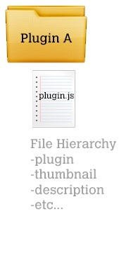
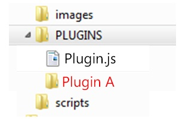
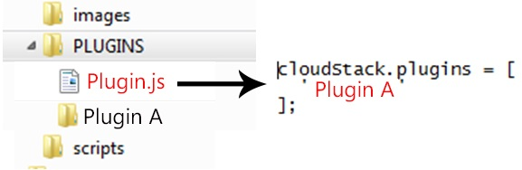
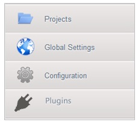

插件¶
存储插件¶
This section gives an outline of how to implement a plugin to integrate a third-party storage provider. For details and an example, you will need to read the code.
Note
Example code is available at: plugins/storage/volume/sample
Third party storage providers can integrate with CloudStack to provide either primary storage or secondary storage. For example, CloudStack provides plugins for Amazon Simple Storage Service (S3) or OpenStack Object Storage (Swift). The S3 plugin can be used for any object storage that supports the Amazon S3 interface.
Additional third party object storages that do not support the S3 interface can be integrated with CloudStack by writing plugin software that uses the object storage plugin framework. Several new interfaces are available so that storage providers can develop vendor-specific plugins based on well-defined contracts that can be seamlessly managed by CloudStack.
Artifacts such as templates, ISOs and snapshots are kept in storage which CloudStack refers to as secondary storage. To improve scalability and performance, as when a number of hosts access secondary storage concurrently, object storage can be used for secondary storage. Object storage can also provide built-in high availability capability. When using object storage, access to secondary storage data can be made available across multiple zones in a region. This is a huge benefit, as it is no longer necessary to copy templates, snapshots etc. across zones as would be needed in an environment using only zone-based NFS storage.
The user enables a storage plugin through the UI. A new dialog box choice is offered to select the storage provider. Depending on which provider is selected, additional input fields may appear so that the user can provide the additional details required by that provider, such as a user name and password for a third-party storage account.
概述 of How to Write a Storage Plugin¶
To add a third-party storage option to CloudStack, follow these general steps (explained in more detail later in this section):
- Implement the following interfaces in Java:
- DataStoreDriver
- DataStoreLifecycle
- DataStoreProvider
- VMSnapshotStrategy (if you want to customize the VM snapshot functionality)
- Hardcode your plugin’s required additional input fields into the code for the Add 二级存储 or Add 主存储 dialog box.
- Place your .jar file in plugins/storage/volume/ or plugins/storage/image/.
- Edit /client/tomcatconf/componentContext.xml.in.
- Edit client/pom.xml.
Implementing DataStoreDriver¶
DataStoreDriver contains the code that CloudStack will use to provision the object store, when needed.
You must implement the following methods:
- getTO()
- getStoreTO()
- createAsync()
- deleteAsync()
The following methods are optional:
- resize()
- canCopy() is optional. If you set it to true, then you must implement copyAsync().
Implementing DataStoreLifecycle¶
DataStoreLifecycle contains the code to manage the storage operations for ongoing use of the storage. Several operations are needed, like create, maintenance mode, delete, etc.
You must implement the following methods:
- initialize()
- maintain()
- cancelMaintain()
- deleteDataStore()
- Implement one of the attach*() methods depending on what scope you want the storage to have: attachHost(), attachCluster(), or attachZone().
Implementing DataStoreProvider¶
DataStoreProvider contains the main code of the data store.
You must implement the following methods:
- getDatastoreLifeCycle()
- getDataStoreDriver()
- getTypes(). Returns one or more types of storage for which this data store provider can be used. For secondary object storage, return IMAGE, and for a Secondary Staging Store, return ImageCache.
- configure(). First initialize the lifecycle implementation and the driver implementation, then call registerDriver() to register the new object store provider instance with CloudStack.
- getName(). Returns the unique name of your provider; for example, this can be used to get the name to display in the UI.
The following methods are optional:
- getHostListener() is optional; it’s for monitoring the status of the host.
Implementing VMSnapshotStrategy¶
VMSnapshotStrategy has the following methods:
- takeVMSnapshot()
- deleteVMSnapshot()
- revertVMSnapshot()
- canHandle(). For a given VM snapshot, tells whether this implementation of VMSnapshotStrategy can handle it.
Place the .jar File in the Right Directory¶
For a secondary storage plugin, place your .jar file here:
plugins/storage/image/
For a primary storage plugin, place your .jar file here:
plugins/storage/volume/
Edit Configuration Files¶
First, edit the following file tell CloudStack to include your .jar file. Add a line to this file to tell the CloudStack 管理服务 that it now has a dependency on your code:
client/pom.xml
Place some facts about your code in the following file so CloudStack can run it:
/client/tomcatconf/componentContext.xml.in
In the section “Deployment configurations of various adapters,” add this:
<bean>id=”some unique ID” class=”package name of your implementation of DataStoreProvider”</bean>
In the section “Storage Providers,” add this:
<property name=”providers”>
<ref local=”same ID from the bean tag's id attribute”>
</property>
Minimum Required Interfaces¶
The classes, interfaces, and methods used by CloudStack from the Amazon Web Services (AWS) Java SDK are listed in this section. An object storage that supports the S3 interface is minimally required to support the below in order to be compatible with CloudStack.
Interface AmazonS3¶
http://docs.aws.amazon.com/AWSJavaSDK/latest/javadoc/com/amazonaws/services/s3/AmazonS3.html
| Modifier and Type | Method and Description |
|---|---|
| Bucket | createBucket(String bucketName) Creates a new Amazon S3 bucket with the specified name in the default (US) region, Region.US_Standard. |
| void | deleteObject(String bucketName, String key) Deletes the specified object in the specified bucket. |
| ObjectMetadata | getObject(GetObjectRequest getObjectRequest, File destinationFile) Gets the object metadata for the object stored in Amazon S3 under the specified bucket and key, and saves the object contents to the specified file. |
| S3Object | getObject(String bucketName, String key) Gets the object stored in Amazon S3 under the specified bucket and key. |
| URL | generatePresignedUrl(String bucketName, String key, Date expiration, HttpMethod method) Returns a pre-signed URL for accessing an Amazon S3 resource. |
| void | deleteBucket(String bucketName) Deletes the specified bucket. |
| List<Bucket> | listBuckets() Returns a list of all Amazon S3 buckets that the authenticated sender of the request owns. |
| ObjectListing | listObjects(String bucketName, String prefix) Returns a list of summary information about the objects in the specified bucket. |
| PutObjectResult | putObject(PutObjectRequest putObjectRequest) Uploads a new object to the specified Amazon S3 bucket. |
| PutObjectResult | putObject(String bucketName, String key, File file) Uploads the specified file to Amazon S3 under the specified bucket and key name. |
| PutObjectResult | putObject(String bucketName, String key, InputStream input, ObjectMetadata metadata) Uploads the specified input stream and object metadata to Amazon S3 under the specified bucket and key name. |
| void | setEndpoint(String endpoint) Overrides the default endpoint for this client. |
| void | setObjectAcl(String bucketName, String key, CannedAccessControlList acl) Sets the CannedAccessControlList for the specified object in Amazon S3 using one of the pre-configured CannedAccessControlLists. |
Class TransferManager
| Modifier and Type | Method and Description |
|---|---|
| Upload | upload(PutObjectRequest putObjectRequest) Schedules a new transfer to upload data to Amazon S3. |
Class PutObjectRequest
| Modifier and Type | Method and Description |
|---|---|
| Upload | upload(PutObjectRequest putObjectRequest) Schedules a new transfer to upload data to Amazon S3. |
第三方 UI 插件¶
Using the new third-party plugin framework, you can write and install extensions to CloudStack. The installed and enabled plugins will appear in the UI alongside the other features. The code for the plugin is simply placed in a special directory within CloudStack’s installed code at any time after CloudStack installation. The new plugin appears only when it is enabled by the cloud administrator.
The left navigation bar of the CloudStack UI has a new 插件 button to help you work with UI plugins.
How to Write a Plugin: 概述¶
The basic procedure for writing a plugin is:
Write the code and create the other files needed. You will need the plugin code itself (in Javascript), a thumbnail image, the plugin listing, and a CSS file.
All UI plugins have the following set of files:
+-- cloudstack/ +-- ui/ +-- plugins/ +-- csMyFirstPlugin/ +-- config.js --> Plugin metadata (title, author, vendor URL, etc.) +-- icon.png --> Icon, shown on side nav bar and plugin listing (should be square, and ~50x50px) +-- csMyFirstPlugin.css --> CSS file, loaded automatically when plugin loads +-- csMyFirstPlugin.js --> Main JS file, containing plugin code
The same files must also be present at /tomcat/webapps/client/plugins.
The CloudStack administrator adds the folder containing your plugin code under the CloudStack PLUGINS folder.
The administrator also adds the name of your plugin to the plugin.js file in the PLUGINS folder.
The next time the user refreshes the UI in the browser, your plugin will appear in the left navigation bar.

How to Write a Plugin: Implementation Details¶
This section requires an understanding of JavaScript and the CloudStack API. You don’t need knowledge of specific frameworks for this tutorial (jQuery, etc.), since the CloudStack UI handles the front-end rendering for you.
There is much more to the CloudStack UI framework than can be described here. The UI is very flexible to handle many use cases, so there are countless options and variations. The best reference right now is to read the existing code for the main UI, which is in the /ui folder. 插件 are written in a very similar way to the main UI.
Create the directory to hold your plugin.
All plugins are composed of set of required files in the directory /ui/plugins/pluginID, where pluginID is a short name for your plugin. It’s recommended that you prefix your folder name (for example, bfMyPlugin) to avoid naming conflicts with other people’s plugins.
In this example, the plugin is named csMyFirstPlugin.
$ cd cloudstack/ui/plugins $ mkdir csMyFirstPlugin $ ls -l total 8 drwxr-xr-x 2 bgregory staff 68 Feb 11 14:44 csMyFirstPlugin -rw-r--r-- 1 bgregory staff 101 Feb 11 14:26 plugins.js
Change to your new plugin directory.
$ cd csMyFirstPlugin
Set up the listing.
Add the file config.js, using your favorite editor.
$ vi config.js
Add the following content to config.js. This information will be displayed on the plugin listing page in the UI:
(function (cloudStack) { cloudStack.plugins.csMyFirstPlugin.config = { title: 'My first plugin', desc: 'Tutorial plugin', externalLink: 'http://www.cloudstack.org/', authorName: 'Test Plugin Developer', authorEmail: 'plugin.developer@example.com' }; }(cloudStack));
Add a new main section.
Add the file csMyFirstPlugin.js, using your favorite editor.
$ vi csMyFirstPlugin.js
Add the following content to csMyFirstPlugin.js:
(function (cloudStack) { cloudStack.plugins.csMyFirstPlugin = function(plugin) { plugin.ui.addSection({ id: 'csMyFirstPlugin', title: 'My Plugin', preFilter: function(args) { return isAdmin(); }, show: function() { return $('<div>').html('Content will go here'); } }); }; }(cloudStack));Register the plugin.
You now have the minimal content needed to run the plugin, so you can activate the plugin in the UI by adding it to plugins.js. First, edit the file:
$ cd cloudstack/ui/plugins $ vi plugins.js
Now add the following to plugins.js:
(function($, cloudStack) { cloudStack.plugins = [ 'csMyFirstPlugin' ]; }(jQuery, cloudStack));Check the plugin in the UI.
First, copy all the plugin code that you have created so far to /tomcat/webapps/client/plugins. Then refresh the browser and click 插件 in the side navigation bar. You should see your new plugin.
Make the plugin do something.
Right now, you just have placeholder content in the new plugin. It’s time to add real code. In this example, you will write a basic list view, which renders data from an API call. You will list all virtual machines owned by the logged-in user. To do this, replace the ‘show’ function in the plugin code with a ‘listView’ block, containing the required syntax for a list view. To get the data, use the listVirtualMachines API call. Without any parameters, it will return VMs only for your active user. Use the provided ‘apiCall’ helper method to handle the server call. Of course, you are free to use any other method for making the AJAX call (for example, jQuery’s $.ajax method).
First, open your plugin’s JavaScript source file in your favorite editor:
$ cd csMyFirstPlugin $ vi csMyFirstPlugin.js
Add the following code in csMyFirstPlugin.js:
(function (cloudStack) { cloudStack.plugins.csMyFirstPlugin = function(plugin) { plugin.ui.addSection({ id: 'csMyFirstPlugin', title: 'My Plugin', preFilter: function(args) { return isAdmin(); }, // Render page as a list view listView: { id: 'testPluginInstances', fields: { name: { label: 'label.name' }, instancename: { label: 'label.internal.name' }, displayname: { label: 'label.display.name' }, zonename: { label: 'label.zone.name' } }, dataProvider: function(args) { // API calls go here, to retrive the data asynchronously // // On successful retrieval, call // args.response.success({ data: [data array] }); plugin.ui.apiCall('listVirtualMachines', { success: function(json) { var vms = json.listvirtualmachinesresponse.virtualmachine; args.response.success({ data: vms }); }, error: function(errorMessage) { args.response.error(errorMessage) } }); } } }); }; }(cloudStack));
Test the plugin.
First, copy all the plugin code that you have created so far to /tomcat/webapps/client/plugins. Then refresh the browser. You can see that your placeholder content was replaced with a list table, containing 4 columns of virtual machine data.
Add an action button.
Let’s add an action button to the list view, which will reboot the VM. To do this, add an actions block under listView. After specifying the correct format, the actions will appear automatically to the right of each row of data.
$ vi csMyFirstPlugin.js
Now add the following new code in csMyFirstPlugin.js. (The dots … show where we have omitted some existing code for the sake of space. Don’t actually cut and paste that part):
... listView: { id: 'testPluginInstances', ... actions: { // The key/ID you specify here will determine what icon is // shown in the UI for this action, // and will be added as a CSS class to the action's element // (i.e., '.action.restart') // // -- here, 'restart' is a predefined name in CloudStack that will // automatically show a 'reboot' arrow as an icon; // this can be changed in csMyFirstPlugin.css restart: { label: 'Restart VM', messages: { confirm: function() { return 'Are you sure you want to restart this VM?' }, notification: function() { return 'Rebooted VM' } }, action: function(args) { // Get the instance object of the selected row from context // // -- all currently loaded state is stored in 'context' as objects, // such as the selected list view row, // the selected section, and active user // // -- for list view actions, the object's key will be the same as // listView.id, specified above; // always make sure you specify an 'id' for the listView, // or else it will be 'undefined!' var instance = args.context.testPluginInstances[0]; plugin.ui.apiCall('rebootVirtualMachine', { // These will be appended to the API request // // i.e., rebootVirtualMachine&id=... data: { id: instance.id }, success: function(json) { args.response.success({ // This is an async job, so success here only indicates // that the job was initiated. // // To pass the job ID to the notification UI // (for checking to see when action is completed), // '_custom: { jobID: ... }' needs to always be passed on success, // in the same format as below _custom: { jobId: json.rebootvirtualmachineresponse.jobid } }); }, error: function(errorMessage) { args.response.error(errorMessage); // Cancel action, show error message returned } }); }, // Because rebootVirtualMachine is an async job, we need to add // a poll function, which will perodically check // the management server to see if the job is ready // (via pollAsyncJobResult API call) // // The plugin API provides a helper function, 'plugin.ui.pollAsyncJob', / which will work for most jobs // in CloudStack notification: { poll: plugin.ui.pollAsyncJob } } }, dataProvider: function(args) { ... ...
Add the thumbnail icon.
Create an icon file; it should be square, about 50x50 pixels, and named icon.png. Copy it into the same directory with your plugin code: cloudstack/ui/plugins/csMyFirstPlugin/icon.png.
Add the stylesheet.
Create a CSS file, with the same name as your .js file. Copy it into the same directory with your plugin code: cloudstack/ui/plugins/csMyFirstPlugin/csMyFirstPlugin.css.